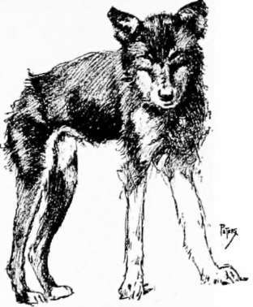
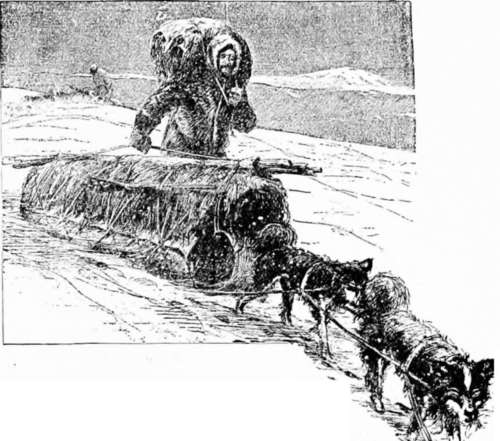

Hunting Musk-Ox With The Dog Ribs. Part 3
Description
This section is from the book "Hunting", by Archibald Rogers. Also available from Amazon: Hunting.
Hunting Musk-Ox With The Dog Ribs. Part 3
I awakened next morning with a sense of weight upon my blanket; and my ears were greeted with a rushing roar caused by a northeast gale, which had covered everything inside our lodge, to a depth of a foot or more, with fine, flour-like snow. The temperature was at least thirty degrees below zero. It was impossible to face such a blizzard without freezing in a few minutes. All landmarks were obscured so that we could not continue upon our course. As we had only wood enough for the time that we expected to be engaged in actual travel, we could have no fire on days like this, when we were compelled to "lay to." We remained in our blankets until midday, when a kettle of meat was (half) boiled, and we turned in again. In the evening a fire about the size of a cigar-box was kept up long enough to boil a kettle of tea, one cup for each man—we always wanted four! No meat was cooked; for our appetites were soon satisfied with the large sticks of white frozen marrow from the long bones of the musk-ox.
Throughout the following day the storm continued with increased severity, and we were forced to lie in the snow another twenty-four hours.
A Giddie.
My dogs never came inside the lodge at night, but coiled themselves up in the lee of the lodge, where the snow soon drifted over them, giving warmth and shelter. The twelve Indian giddies came inside as soon as the last man rolled up in his blanket at night. At first they spent a few minutes fighting over the bones about the fireplace, then they rummaged through everything that was not firmly lashed down. As a dog walked over a prostrate form the muffled "marche" or "m'nitla" would quiet them for an instant, when their snarling and snapping would break out anew, until some of us would pick up a billet of wood and "pacify them." After we had once fallen into the sleep of exhaustion we were seldom awakened by their fighting over us. In the morning I would find two or three giddies coiled up in the snow upon my blanket; the heat of their bodies melted the snow, which froze as soon as they left it, and made my scanty bedding hard and stiff.
On the March.
After sixty hours of such resting we were quite ready to move on, as the thirteenth day dawned bright and clear. Early in the day we caught sight of a band of forty musk-ox already in flight a couple of miles distant. We chased them six miles, but only one of our party reached them, Wisho, who killed four. We were very much fatigued from our long run, and covered with perspiration, which froze on our outer garments as we walked back with the dogs to bring up the sleds. It was after nightfall before we set up the lodge, and cold, tired, and hungry, sat shivering around a column of smoke over which hung a kettle containing both meat and drink; for our supply of tea was exhausted, and we had to quench our thirst with the greasy bouillon, or "te-woh," in which the meat was boiled.
The temperature was falling rapidly, giving us some concern about Johnnie Cohoyla, who had not returned. The next morning I was awakened by the monotonous wailing of his brother, Esyuh, who was chanting the virtues of the lost reprobate, and entreating the fates in general, and the North Wind in particular, to spare him.
Tunna hoola (a man is lost).
The Dog Ribs repeated the phrase with significant glances at me, as if this "Woh-kahwe" accompanying them had offended the Great Spirit, so that he had wreaked his vengeance upon the man who had allowed me to enter the Dog Rib hunting-ground. A terrific gale with a temperature of thirty degrees below zero prevented us from searching for the lost man; we could only spend the day in our blankets, while the snow drifted in and over all.
That was one of the most miserable days I ever spent. I had tried twice to run with the Indians, and failed to reach the musk-ox; and there seemed to be no immediate prospect of my getting any. The musk-ox were not numerous, they said, and our wood might fail before we secured any more. Johnnie must have perished, as no human being could live through a night of such storm without protection, and it was thirty-six hours before we could search for him. We were shivering in our blankets, even the Indians saying, "Edsah, yazzy edsah" —(it is cold, very cold).
The next morning proved to be calm, and we set off in search of Johnnie. I had as great difficulty to keep my cheeks from freezing as at any time during the winter, though there was scarcely any wind blowing.
After running about ten miles I was recalled by the signalling of another searcher. Johnnie had been found by his brother, safely and snugly rolled up in a couple of musk-ox skins which he had secured, where he had been warmer than if in the lodge; and with plenty of frozen marrow to eat he had been quite comfortable.
On the sixteenth day we continued the journey northward. With the field-glass I discovered a band of fourteen musk-ox on the summit of a high hill, so far away that it was impossible to distinguish them from the surrounding bowlders with the unaided eye. In a couple of hours we were within half a mile of them, and released the dogs, which soon disappeared over an intervening ridge. My companions had concluded, from the way that I had run, or failed to run, on the two previous occasions, that I could not run very far, and that their best plan to keep me from bringing a magazine-gun into competition with their muzzle-loaders, was to give the musk-ox time to get far enough away so that they could plant me in the race. I had prepared for this occasion by taking off some of my clothing, and only carrying the ammunition actually required; so that when they did begin to run at a swift pace my snow-shoes clanked close beside them.
We soon came upon eleven of the musk-ox standing at bay in two little clusters, hardly lowering their heads at the dogs, whose ardor had been cooled by the statuelike immobility of the noble animals. Their robes were in prime condition; the long hair and heavy, erect mane gave them an imposing appearance. To kill them was simple butch-ery; yet I had no choice but to fire as rapidly as possible and get my share of them, as they were all doomed anyway.
Continue to:
- prev: Hunting Musk-Ox With The Dog Ribs. Part 2
- Table of Contents
- next: Hunting Musk-Ox With The Dog Ribs. Part 4